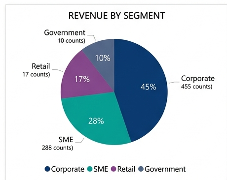
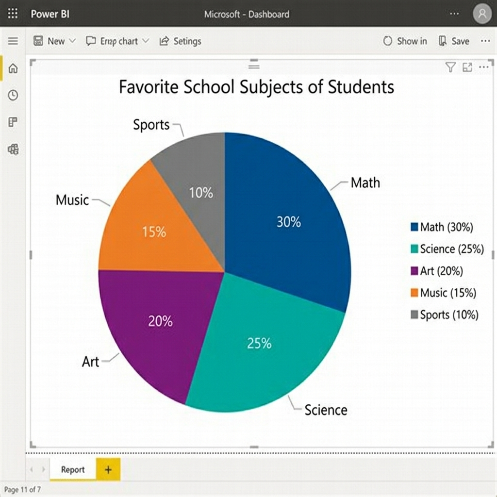
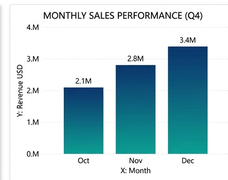
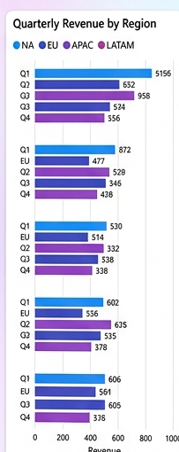
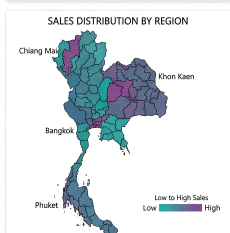
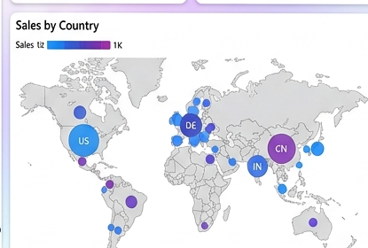

AI for Ed · สัปดาห์ที่ 5
สำรวจข้อมูลด้วย Power BI
เริ่มต้นคลาส
ระบุข้อมูลผู้เรียน
แนวคิด 1 · ข้อมูลอยู่รอบตัวเรา
ข้อมูลอยู่ทุกที่รอบตัวเรา!
ทุกวันเราสร้างและใช้ ข้อมูล โดยไม่รู้ตัว:
- โซเชียลมีเดีย — ยอดไลก์ ยอดวิว จำนวนผู้ติดตาม
- ช้อปปิ้ง — ราคาสินค้า ยอดขาย ดาวรีวิว
- สภาพอากาศ — อุณหภูมิ ปริมาณฝน
- โรงเรียน — คะแนนสอบ เกรด จำนวนนักเรียน
แนวคิด 2 · เปลี่ยนตัวเลขเป็นคำตอบ
Data Analytics = เปลี่ยนตัวเลข → คำตอบ
ตัวเลขดิบๆ ดูแล้ว ไม่เข้าใจอะไรเลย
Data Analytics คือกระบวนการเปลี่ยนตัวเลขดิบ → "คำตอบที่เข้าใจง่าย"
คำตอบเหล่านี้เรียกว่า Insight (ข้อมูลเชิงลึก) ช่วยให้เราตัดสินใจได้ดีขึ้น!
สรุป: ข้อมูลดิบ (ตัวเลขเยอะๆ) → วิเคราะห์ → Insight (คำตอบ) → ตัดสินใจ!
ตัวอย่าง · Netflix & YouTube
ตัวอย่าง: Netflix / YouTube รู้ว่าเราชอบดูอะไร!
เคยสงสัยไหมว่า ทำไม Netflix/YouTube แนะนำคลิปที่เราชอบได้?
- เก็บข้อมูลว่าเราดูอะไร นานแค่ไหน กดข้ามตอนไหน
- วิเคราะห์ว่าคนที่ดูเหมือนเราชอบอะไรอีก
- แนะนำคลิป/หนังที่เราน่าจะชอบ
ผลลัพธ์: กว่า 75–80% ของสิ่งที่คนดูบน Netflix มาจาก ระบบแนะนำ ที่วิเคราะห์จากข้อมูลการดูของเรา!
ตัวอย่าง · Shopee & ร้านค้าออนไลน์
ตัวอย่าง: Shopee รู้ว่าเราอยากซื้ออะไร!
เปิด Shopee แล้วเห็นสินค้าที่ตรงใจ? นั่นคือ Data Analytics!
- ดูว่าคนซื้ออะไรบ่อย → แนะนำสินค้า
- รู้ว่าช่วงเวลาไหนคนซื้อเยอะ → จัดโปรโมชัน
- วิเคราะห์รีวิว → ปรับปรุงสินค้า
สรุป: ทุกครั้งที่เราคลิก กดไลก์ หรือซื้อของ — ข้อมูลเหล่านั้นถูกเก็บและวิเคราะห์!
ประเภทข้อมูล · หมวดหมู่
ข้อมูลหมวดหมู่ (Category Data)
ข้อมูลที่ จัดเป็นกลุ่ม ได้ แต่ คำนวณไม่ได้
- เพศ: ชาย / หญิง — เอาไปบวกกันไม่ได้
- ภาค: เหนือ / อีสาน / กลาง / ใต้ / ตะวันออก / ตะวันตก / กทม.ฯ
- ประเภทผู้ป่วย: สัมผัสผู้ติดเชื้อ / บุคลากรทางการแพทย์ / มาจากต่างประเทศ
- สีที่ชอบ: แดง / น้ำเงิน / เขียว
จำง่าย: ถ้าเอามา บวก ลบ หาค่าเฉลี่ย ไม่ได้ = ข้อมูลหมวดหมู่
ข้อมูลหมวดหมู่ยังแบ่งย่อยได้อีก 2 แบบ — เดี๋ยวดูกันในสไลด์ถัดๆ ไป
ประเภทข้อมูล · ตัวเลข
ข้อมูลตัวเลข (Numerical Data)
ข้อมูลที่เป็น ตัวเลข สามารถ คำนวณ ได้
- อายุ: 12, 25, 60 ปี — หาค่าเฉลี่ยได้
- ส่วนสูง: 150, 165, 180 ซม.
- ราคาสินค้า: 29, 199, 1500 บาท
- จำนวนผู้ป่วย: 100, 500, 2000 คน
จำง่าย: ถ้าเอามา บวก ลบ หาค่าเฉลี่ย ได้ = ข้อมูลตัวเลข
ในไฟล์ COVID: ตัวเลข (Numerical) = อายุ, สัปดาห์ที่รายงาน, จำนวนผู้ป่วย
ประเภทข้อมูล · หมวดหมู่แบ่งย่อย
ข้อมูลหมวดหมู่แบ่งเป็น 2 แบบ: Nominal & Ordinal
Nominal — ไม่มีลำดับ
จัดกลุ่มได้ แต่ สลับที่กันได้ ไม่มีอันไหนมาก่อน–หลัง (เหมือนสีในภาพ)
ตัวอย่าง: เพศ, ภาค, จังหวัด, สีที่ชอบ
Ordinal — มีลำดับ
จัดกลุ่มได้ และมีลำดับชัดเจน (น้อย → มาก เหมือนแท่งในภาพ)
ตัวอย่าง: ช่วงอายุ, ระดับความพอใจ (น้อย/กลาง/มาก), เกรด (A/B/C)
ในไฟล์ COVID แยกได้ 3 แบบ:
Nominal: เพศ, ภาค, จังหวัด, ประเภทผู้ป่วย, ความเสี่ยง |
Ordinal: ช่วงอายุ, สัปดาห์/วันที่รายงาน |
Numerical: อายุ (ตัวเลข)
จำง่าย: Nominal = Name (ชื่อเรียกเฉยๆ ไม่มีลำดับ) · Ordinal = Order (มีลำดับ)
แนวคิด · 4 ระดับการวิเคราะห์
4 ระดับของการวิเคราะห์ข้อมูล
| ระดับ | คำถาม | ตัวอย่างง่ายๆ | ความยาก |
|---|
1. Descriptive
(สรุปสิ่งที่เกิด) |
"เกิดอะไรขึ้น?" |
คลิปนี้มียอดวิว 1 ล้าน · ผู้ป่วย COVID ภาคกลางมากสุด |
|
2. Diagnostic
(หาสาเหตุ) |
"ทำไมถึงเกิด?" |
ทำไมภาคกลางผู้ป่วยเยอะ? → เพราะมีสถานบันเทิง · คนแน่น |
|
3. Predictive
(คาดการณ์) |
"จะเกิดอะไรต่อ?" |
เดือนหน้าจะมีผู้ป่วยเพิ่มกี่คน? |
|
4. Prescriptive
(แนะนำ) |
"ควรทำอะไร?" |
ควรล็อคดาวน์ไหม? ต้องเพิ่มเตียงกี่เตียง? |
|
วันนี้เราจะเน้นระดับ 1 & 2: สรุปข้อมูลเป็นกราฟ (Descriptive) แล้วตอบคำถาม "ทำไม" (Diagnostic) จากสิ่งที่เห็น
กราฟ 1 · Pie Chart
Pie Chart — ดูสัดส่วนเป็นเปอร์เซ็นต์
แสดง ส่วนแบ่ง ของแต่ละกลุ่มเทียบกับทั้งหมด (100%)
- เหมาะกับกลุ่ม น้อยๆ (2-5 กลุ่ม)
- ตอบคำถาม: "กลุ่มไหนมีสัดส่วนมากสุด?"
- ถ้ากลุ่มเยอะเกิน → ดูยากมาก ใช้ Bar Chart ดีกว่า
ใน Workshop วันนี้: สร้าง Pie Chart แสดงจำนวนผู้ป่วย COVID แยกตามภาค


กราฟ 2 · Bar Chart
Bar Chart — เปรียบเทียบจำนวนระหว่างกลุ่ม
แท่งยาว = จำนวนเยอะ, แท่งสั้น = จำนวนน้อย
- อ่านง่ายที่สุด ใช้บ่อยที่สุดในรายงาน
- ตอบคำถาม: "กลุ่มไหนมีจำนวนเยอะสุด/น้อยสุด?"
- Stacked Bar = แท่งต่อกัน แบ่งสีตามกลุ่มย่อย (เช่น เพศ)
ใน Workshop วันนี้: สร้าง Stacked Bar นับผู้ป่วยแต่ละช่วงอายุ แยกตามเพศ


กราฟ 3 · Filled Map
Filled Map — ดูข้อมูลบนแผนที่
ระบายสีบนแผนที่ — สีเข้ม = ข้อมูลมาก, สีอ่อน = น้อย
- ตอบคำถาม: "พื้นที่ไหนมีข้อมูลมากสุด?"
- เห็น ภาพรวมทั้งประเทศ ในหน้าเดียว
- เหมาะกับข้อมูลที่มี จังหวัด / ประเทศ / ภาค
ใน Workshop วันนี้: สร้าง Filled Map ประเทศไทยแสดงผู้ป่วย แยกสีตามภาค


กราฟ 4 · Tree Map
Tree Map — ดูขนาดเปรียบเทียบ
สี่เหลี่ยมใหญ่ = กลุ่มใหญ่, สี่เหลี่ยมเล็ก = กลุ่มเล็ก
- ตอบคำถาม: "กลุ่มไหนใหญ่สุด?"
- แสดง หลายระดับ ได้ (กลุ่มใหญ่ + กลุ่มย่อย)
- เหมาะกับข้อมูลที่มี หมวดหมู่ซ้อนกัน
ใน Workshop วันนี้: สร้าง Tree Map แยกประเภทผู้ป่วย + กลุ่มสำรวจ
กราฟ 5 · Key Influencer
Key Influencer — หาปัจจัยที่มีผล
กราฟพิเศษของ Power BI ที่ช่วยหาว่า "อะไรมีผลมากที่สุด"
- ตอบคำถาม: "ปัจจัยอะไรทำให้เกิดผลลัพธ์นี้?"
- Power BI วิเคราะห์ให้อัตโนมัติ เช่น เพศ/อายุ/ภาค ไหนมีผลมากสุด
- แสดงเป็น "กี่เท่า" ที่ปัจจัยนั้นเพิ่มโอกาส
ใน Workshop วันนี้: วิเคราะห์ว่าปัจจัยอะไรเพิ่มโอกาส "สัมผัสผู้ติดเชื้อ"
เครื่องมือ · Microsoft Power BI
Power BI คืออะไร?
Power BI เป็นโปรแกรมของ Microsoft ที่ช่วย สร้างกราฟสวยๆ จากข้อมูล — แค่ลากวาง ไม่ต้องเขียนโค้ด!
- ดาวน์โหลด ฟรี (Power BI Desktop)
- สร้างกราฟได้หลายแบบ: วงกลม, แท่ง, แผนที่, Tree Map
- ใช้งานด้วยการ ลากและวาง
- เชื่อมต่อข้อมูลจาก Excel ได้ทันที
Workshop · เริ่มต้น
Workshop: วิเคราะห์ข้อมูลผู้ป่วย COVID ด้วย Power BI
วิธีนำเข้าข้อมูลใน Power BI:
- เปิด Power BI Desktop
- กด Get Data → เลือก Excel Workbook
- เลือกไฟล์ Covid_Round_4_cases.xlsx (ดาวน์โหลดด้านบน)
- เลือกชีตข้อมูล → กด Load
สิ่งที่ต้องทำวันนี้:
- สร้างแผนภูมิทั้งหมด 4 หน้า ใน Power BI
- ตอบคำถามจากกราฟที่สร้าง
- Save ไฟล์ Power BI → ส่งบน Google Classroom
- ส่งคำตอบใน Google Form
ก่อนเริ่ม · ข้อ 1
ก่อนสร้างกราฟ: ลองจำแนกประเภทตัวแปร
เปิดดูคอลัมน์ในไฟล์ COVID แล้วจำแนกตามที่เรียนมา (Nominal / Ordinal / Numerical) — ยกตัวอย่างอย่างละ 2 ตัว
1. ยกตัวอย่างตัวแปรในชุดข้อมูล COVID: Ordinal 2 ตัว / Nominal 2 ตัว / Numerical 2 ตัว
หน้า 1 · ข้อ 1.1
สร้าง Pie Chart — จำนวนผู้ป่วยแยกตามภาค
1 คลิกที่ Visualizations ด้านขวา → เลือกไอคอน Pie Chart (รูปวงกลม)
2 ลาก ภาค ไปวางในช่อง Legend
3 ลาก ภาค (หรือคอลัมน์ที่ระบุผู้ป่วย) ไปวางในช่อง Values → เลือก Count
4 จะได้วงกลมแสดงสัดส่วนจำนวนผู้ป่วยแต่ละภาค
สังเกต: ภาคไหนมีจำนวนผู้ป่วยมากที่สุด? ภาคไหนน้อยที่สุด? → ใช้ตอบคำถามข้อ 2
ภาคมี ~7 กลุ่ม ถ้าวงกลมดูแน่นเกินไป ลองเปลี่ยนเป็น Bar Chart จะเปรียบเทียบง่ายกว่า
2. ภาคไหนมีจำนวนผู้ติดเชื้อน้อยสุด? (คิดว่าแปลกหรือเปล่า? ทำไม?)
หน้า 1 · ข้อ 1.2
สร้าง Stacked Bar Chart — ช่วงอายุแยกตามเพศ
1 คลิกพื้นที่ว่าง → เลือก Stacked Bar Chart จาก Visualizations
2 ลาก ช่วงอายุ (หรือ กลุ่มอายุ) ไปวางในช่อง Y-axis
3 ลากคอลัมน์ตัวนับ ไปวางในช่อง X-axis → เลือก Count
4 ลาก เพศ ไปวางในช่อง Legend → จะเห็นแท่งแบ่งสีตามเพศ
สังเกต: ช่วงอายุไหนติดเชื้อเยอะที่สุด? เพศชายหรือหญิงมากกว่า?
หน้า 2 · ข้อ 2.1–2.3
หน้า 2: แผนที่ + ค่าเฉลี่ยอายุ + Tree Map
2.1 Filled Map ประเทศไทย
- สร้างหน้าใหม่ (กด + ด้านล่าง)
- เลือก Filled Map จาก Visualizations
- ลาก จังหวัด ไปในช่อง Location
- ลาก ภาค ไปในช่อง Legend (ให้สีแยกตามภาค)
- ลากคอลัมน์นับจำนวน ไปในช่อง Tooltips
2.2 คำนวณค่าเฉลี่ยอายุ
- เลือก Visualization Card
- ลาก อายุ ไปในช่อง Fields
- คลิกลูกศรลง → เปลี่ยนจาก Sum เป็น Average
2.3 Tree Map — ประเภทผู้ป่วย + กลุ่มสำรวจ
- เลือก Treemap จาก Visualizations
- ลาก ประเภทผู้ป่วย ไปในช่อง Category
- ลาก กลุ่มสำรวจ ไปในช่อง Details
- ลากคอลัมน์นับจำนวน ไปในช่อง Values
เคล็ดลับ: ถ้า Filled Map ไม่แสดงแผนที่ไทย → ไปที่ File > Options > Security > เปิด Map and Filled Map visuals
หน้า 3 · ข้อ 3.1
หน้า 3: เพศชาย–หญิงแต่ละภาค (เฉพาะอายุ 20–29)
1 สร้างหน้าใหม่ (กด + ด้านล่าง) → เลือก Clustered Bar Chart
2 ลาก ภาค ไปวางในช่อง Y-axis
3 ลากคอลัมน์ใดก็ได้ (เช่น เพศ) ไปวางในช่อง X-axis → เลือก Count
4 ลาก เพศ ไปวางในช่อง Legend
5 ที่แถบ Filters ของกราฟนี้ → ลาก ช่วงอายุ เข้ามา → ติ๊กเฉพาะ 20–29 ปี
3. ในกลุ่มอายุ 20-29 ปี ภาคใดที่มีอัตราส่วนเพศชายติดเชื้อมากกว่าเพศหญิง?
หน้า 3 · ข้อ 3.2
หน้า 3: ค่าเฉลี่ยอายุ แยกตามภาค
1 ในหน้า 3 เดิม คลิกพื้นที่ว่าง → เลือก Clustered Bar Chart อันใหม่
2 ลาก ภาค ไปวางในช่อง Y-axis
3 ลาก อายุ ไปวางในช่อง X-axis → คลิกลูกศรลง เปลี่ยนเป็น Average
4. ภาคใดมีค่าเฉลี่ยอายุมากที่สุด?
หน้า 3 · ข้อ 3.3
หน้า 3: ความเสี่ยง "สถานบันเทิง" — ภาคไหน เพศอะไร
1 ในหน้า 3 เดิม เลือก Stacked Bar Chart อันใหม่
2 ลาก ภาค ไปช่อง Y-axis · ลากคอลัมน์ใดก็ได้ ไปช่อง X-axis → Count
3 ลาก เพศ ไปวางในช่อง Legend (แท่งจะแบ่งสีตามเพศ)
4 ที่แถบ Filters → ลาก ความเสี่ยง → ติ๊กเฉพาะ สถานบันเทิง
5. ความเสี่ยงที่จะติดจากสถานบันเทิงเกิดขึ้นที่ภาคใด ส่วนใหญ่เป็นเพศอะไร?
หน้า 3 · ข้อ 3.4
หน้า 3: หาข้อมูลอายุที่ผิดปกติ (รายจังหวัด)
1 ในหน้า 3 เดิม เลือก Table (ตาราง)
2 ลาก จังหวัด และ อายุ เข้าไปในตาราง
3 คลิกลูกศรที่ อายุ → เปลี่ยนเป็น Minimum
4 คลิกหัวคอลัมน์ อายุ เพื่อเรียงจาก น้อย → มาก
6. จังหวัดใด ข้อมูลอายุผู้ป่วยมีปัญหา? (ข้อมูลผิดปกติ)
หน้า 4 · ข้อ 4.1
Key Influencer — วิเคราะห์ปัจจัยผู้ติดเชื้อ
Key Influencer คือ กราฟพิเศษของ Power BI ที่ช่วยหาว่า "ปัจจัยอะไร" ทำให้เกิดผลลัพธ์ที่เราสนใจ
1 สร้างหน้าใหม่ → เลือก Key Influencers จาก Visualizations
2 ลาก ประเภทผู้ป่วย ไปในช่อง Analyze
3 ลาก เพศ, ภาค, ช่วงอายุ, กลุ่มสำรวจ ไปในช่อง Explain by
4 ที่ด้านบน เลือกค่า "2.สัมผัสผู้ติดเชื้อ"
5 อ่านผล: Power BI จะบอกว่า ปัจจัยไหน เพิ่มโอกาสติดจาก "สัมผัสผู้ติดเชื้อ" มากที่สุด
Key Influencer อ่านอย่างไร:
- ดูว่า เพศ, ภาค, หรืออายุ ไหนทำให้โอกาสติดจาก "สัมผัสผู้ติดเชื้อ" สูงขึ้น
- ตัวเลข "is X times more likely" หมายความว่าปัจจัยนั้นเพิ่มโอกาสกี่เท่า
ส่งงาน
ส่งงาน
1 ส่งไฟล์ Power BI
- กด File → Save As ตั้งชื่อเป็น ชื่อ_ชั้น_COVID.pbix
- อัปโหลดไฟล์ .pbix บน Google Classroom
2 ส่งคำตอบใน Google Form
- ตอบคำถามทั้ง 6 ข้อ
- แนบภาพหน้าจอประกอบ